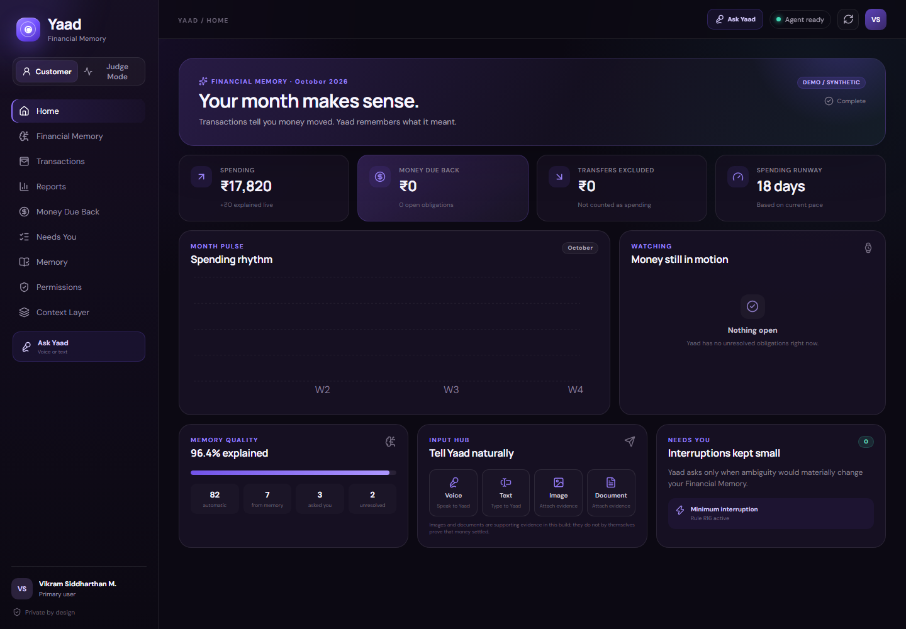
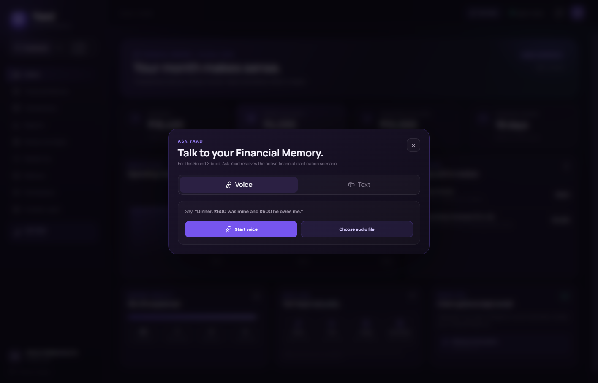
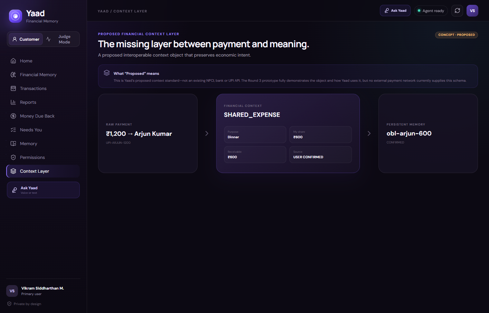
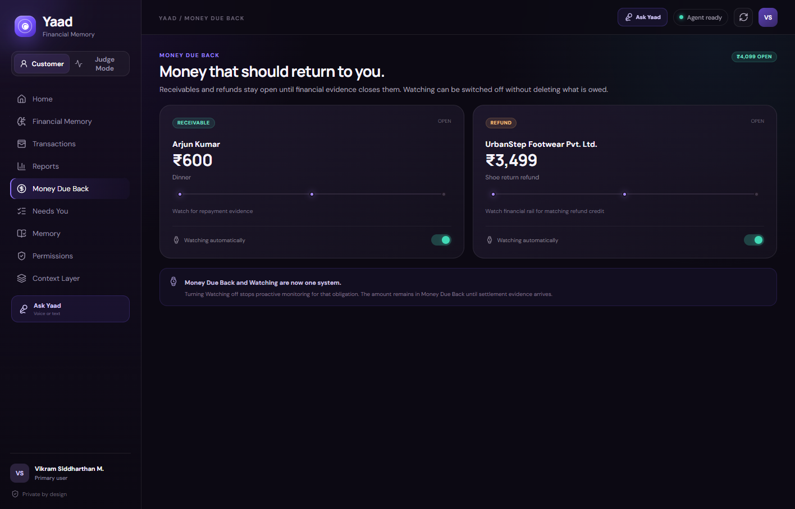
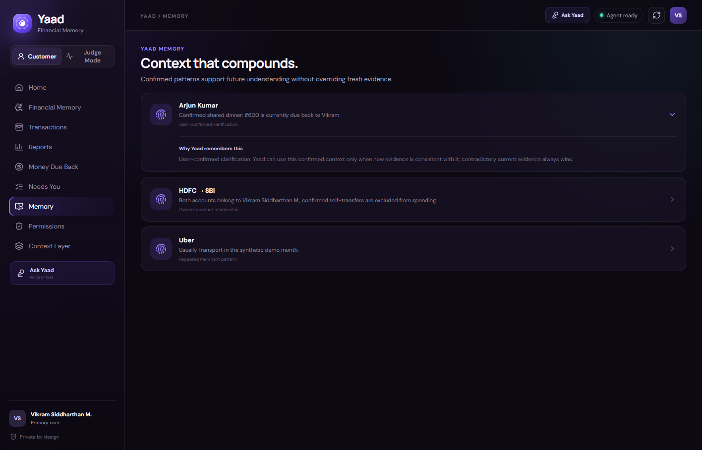
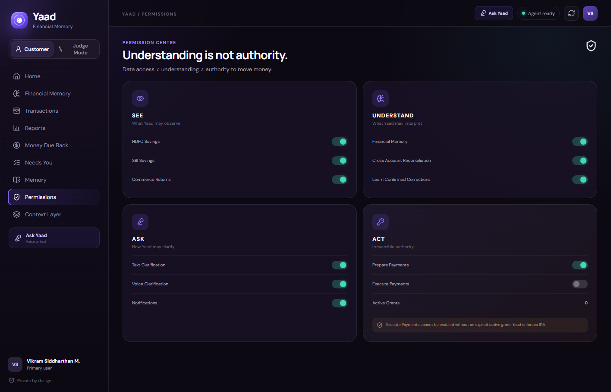
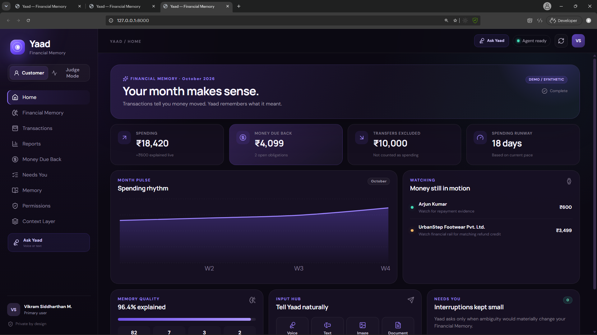

01 · Home
Home — “Your month makes sense.”
The primary surface. It shows explained spending, Money Due Back, transfers excluded, runway, watching and whether anything Needs You.

Every point where a person sees, answers, authorises or corrects Yaad. Screens below are taken from the working Round 3 product wherever available; interaction-state mockups fill the two transient moments that occur inside the live flow.


“Dinner. ₹600 was mine and ₹600 he owes me.”No correction or rewriting is applied.





One connected source is unavailable or stale. Yaad will not infer missing transactions or claim a complete financial picture.